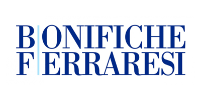
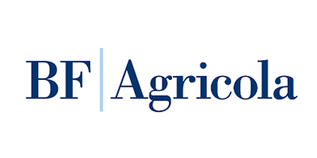
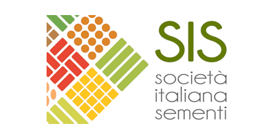
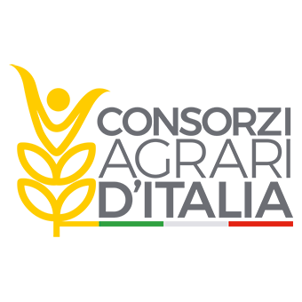
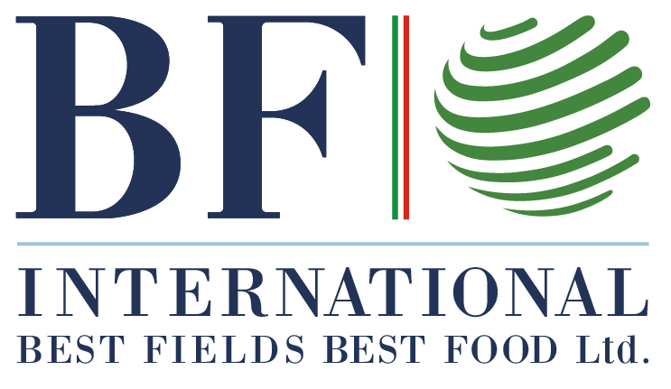
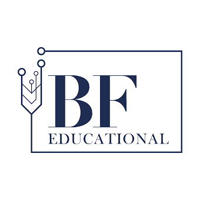
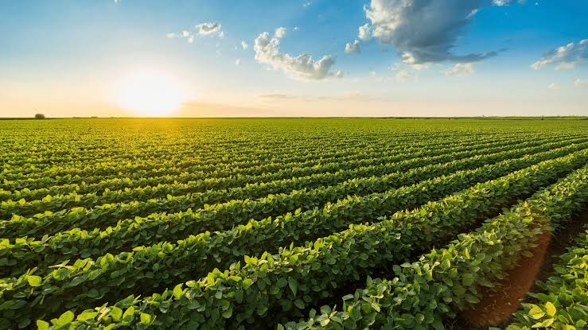
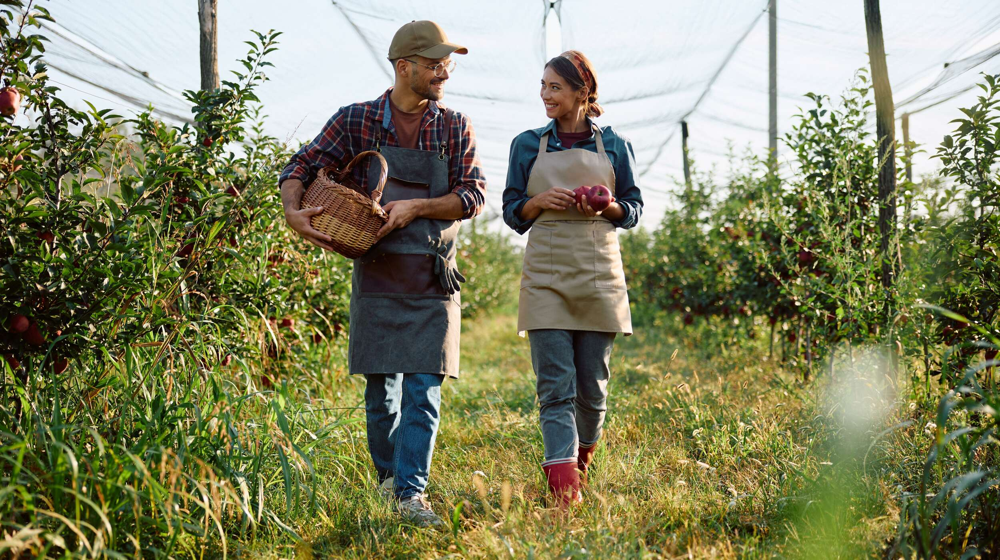
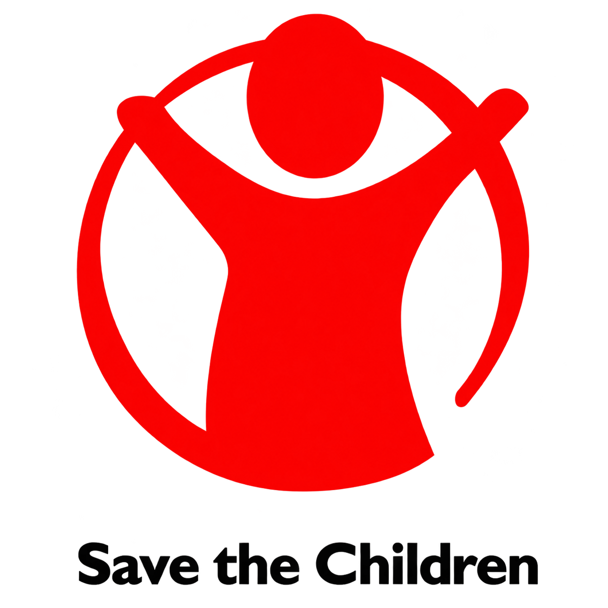
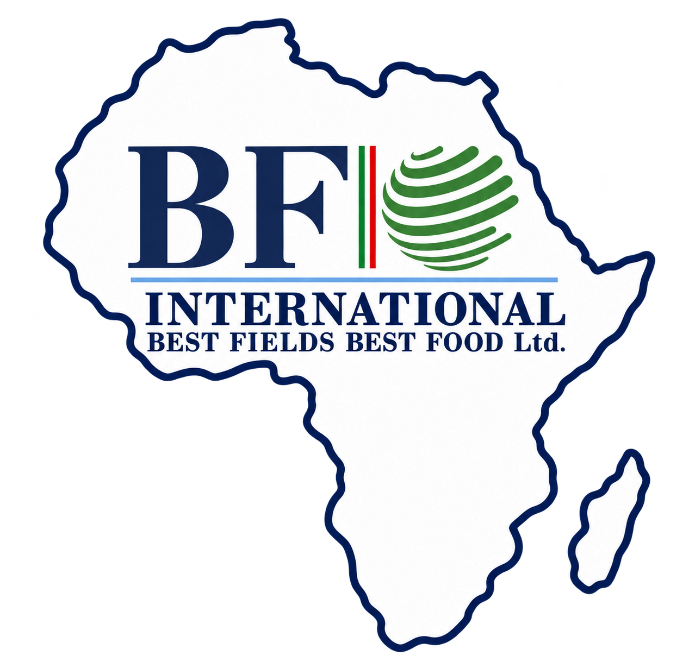

BF S.p.A.
Dal seme alla tavola attraverso l'innovazione e la sostenibilità
La nostra missione
Il Gruppo BF ha la missione di porsi come integratore di sistema nei settori strategici in ambito agro-industriale, capace di sviluppare il capitale umano per le sfide del futuro, promuovendo un modello integrato di filiera tracciabile, di qualità, scalabile e replicabile a livello globale. Il Gruppo BF si impegna a fornire ai consumatori un'ampia selezione di prodotti alimentari di alta qualità, coltivati in Italia e tracciabili dalla semina, attraverso un'agricoltura innovativa che tenda a favorire le pratiche sostenibili. L'obiettivo principale è valorizzare le eccellenze della filiera agro-alimentare, costituita da realtà tra loro complementari, impegnandosi nella tutela del territorio e delle risorse naturali del Paese.






Il nostro impegno per la sostenibilità
Attraverso il Piano Strategico di Sostenibilità 2023–2027, abbiamo definito le priorità e le azioni per integrare la sostenibilità nel nostro modello di business. Il Piano si articola in cinque ambiti strategici. Ognuna di queste aree è parte integrante della strategia del Gruppo e contribuisce al raggiungimento degli Obiettivi di Sviluppo Sostenibile (SDGs) dell'Agenda 2030, confermando l'impegno verso un modello di crescita sostenibile e responsabile.
Sostenibilità ambientale
Promuoviamo la sostenibilità ambientale attraverso la formazione del personale, lo sviluppo delle energie rinnovabili, il coinvolgimento dei fornitori, l'adozione di sistemi di gestione certificati e la transizione verso pratiche agroecologiche.
Biodiversità
Tuteliamo la biodiversità attraverso la gestione conservativa dei suoli, l'agricoltura di precisione e il ripristino degli habitat, monitorando i potenziali rischi per gli ecosistemi anche lungo la nostra catena di fornitura.
Tracciabilità di filiera
Promuoviamo una filiera responsabile attraverso il Codice di Condotta Fornitori, la mappatura delle certificazioni ESG dei fornitori e il miglioramento dei processi di qualifica. Rafforziamo inoltre qualità, sicurezza alimentare ed etica mediante certificazioni e audit.
Capitale umano
Valorizziamo le persone attraverso l'analisi del clima aziendale, il coinvolgimento del personale e i programmi di valutazione delle performance. Promuoviamo l'adozione del Codice Etico e l'utilizzo dei canali di whistleblowing. Attestiamo inoltre, attraverso le certificazioni ISO 45001 conseguite da alcune società del Gruppo, l'adozione di sistemi di gestione per la salute e la sicurezza sul lavoro.
Comunità e territorio
Sosteniamo lo sviluppo delle comunità locali attraverso progetti ad alto valore sociale e collaborazioni con organizzazioni benefiche. Promuoviamo iniziative di solidarietà, recupero e distribuzione delle eccedenze alimentari e contrasto alla povertà educativa.
ESG
Scopri come trasformiamo il nostro impegno in azioni concrete per un futuro sostenibile.
Ambiente

- Piano di decarbonizzazione in corso con l'obiettivo di ridurre del 70% le emissioni Scope 1 e 2 entro il 2030 (rispetto all'anno base: 2024).
- Riduzione del 25,3% del consumo di energia da fonti fossili nel 2025 rispetto al 2024.
- 20,8% del consumo energetico complessivo proveniente da fonti rinnovabili nel 2025.
- Riduzione del 11% circa del consumo idrico complessivo nel 2025 rispetto al 2024.
- Termotrattamento delle sementi per il controllo dei patogeni del seme, senza l'impiego di prodotti chimici nella concia.
- Agricoltura di precisione su 5.918 ettari, attraverso tecnologie digitali per ottimizzare l'impiego delle risorse agricole, limitare le perdite di nutrienti e ridurre la pressione chimica sugli ecosistemi.
- Economia circolare: gestione responsabile dei rifiuti e valorizzazione dei sottoprodotti agricoli e agroindustriali, favorendone il recupero e il riutilizzo.
Sociale

- Formazione continua del personale su sostenibilità, salute e sicurezza sul lavoro.
- Coinvolgimento dei dipendenti attraverso questionari sul clima aziendale ed eventi di aggregazione.
- Politica sui Diritti Umani e la Responsabilità Sociale, volta a tutelare la dignità e i diritti delle persone, contrastare ogni forma di discriminazione, lavoro minorile e forzato e promuovere pari opportunità, inclusione e condizioni di lavoro sicure e dignitose.
- Sostegno allo sviluppo delle comunità locali e iniziative di solidarietà, attraverso progetti ad alto valore sociale, collaborazioni con organizzazioni benefiche, recupero e distribuzione delle eccedenze alimentari e iniziative sul territorio.
- Progetti internazionali di sviluppo sostenibile, attraverso le iniziative agricole di BF International in Africa.
- Sistemi di gestione e certificazioni di qualità e sicurezza alimentare presso società e stabilimenti del Gruppo.
- Ascolto dei consumatori attraverso questionari, raccolta dei feedback e gestione delle segnalazioni e dei reclami.
Governance
- Gestione responsabile e trasparente del business, promuovendo la fiducia degli stakeholder e il rispetto dei valori sanciti dal Codice Etico delle società del Gruppo.
- Allineamento dei fornitori ai valori etici del Gruppo, attraverso la sottoscrizione del Codice di Condotta dei Fornitori, favorendo comportamenti responsabili lungo la catena di fornitura.
- Prevenzione dei reati e rafforzamento dei sistemi di controllo aziendale, attraverso l'adozione del Modello di Organizzazione, Gestione e Controllo ai sensi del D.Lgs. 231/2001 da parte della capogruppo e di diverse società controllate.
- Tutela del benessere animale, attraverso la promozione di pratiche di allevamento rispettose delle esigenze degli animali, garantendo attenzione alla loro salute e contrastando ogni forma di maltrattamento.
- Segnalazione riservata di presunte violazioni normative e dei principi etici aziendali, attraverso la piattaforma digitale protetta «My Whistleblowing», accessibile ai dipendenti e agli altri soggetti interessati.
Scopri alcune delle nostre iniziative e collaborazioni per le comunità e il territorio
(Clicca sui loghi per approfondire i progetti)

Sosteniamo programmi dedicati all'educazione, all'inclusione sociale e alla creazione di nuove opportunità per bambini e giovani.
Un'iniziativa dedicata alla diffusione dell'innovazione agricola, che favorisce il confronto con gli agricoltori e la condivisione di conoscenze e pratiche sostenibili.

Attraverso progetti agricoli in Africa,ci impegniamo a sostenere le comunità locali e a sviluppare ecosistemi agroindustriali sostenibili.
Rendicontazione di Sostenibilità 2025
Approfondisci il nostro percorso di sostenibilità attraverso la Rendicontazione di Sostenibilità 2025, contenuta nella Relazione Finanziaria Annuale Consolidata del Gruppo BF.
Clicca sull'icona per consultare il documento PDF